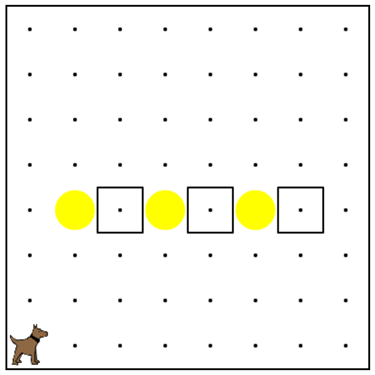

Code Hs
This project was good because it taught me about java script. I am proud of it because I advanced my skills in java script and learned the basic of making a video game. One thing difficult was one of the levels it took about two days to work on. Some things I could have changed was kept on going on to finish all the levels and being able to create the final project which would have been a video game.